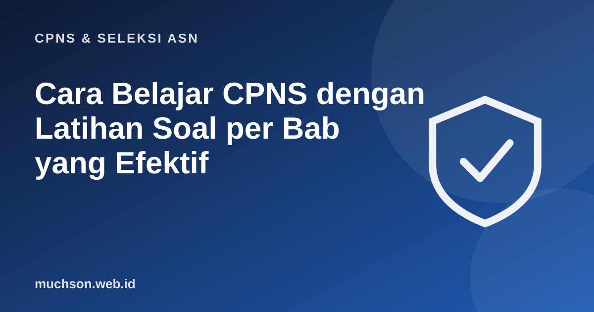

Beranda › Artikel › CPNS & Seleksi ASN
CPNS & Seleksi ASNCara Belajar CPNS dengan Latihan Soal per Bab yang Efektif
Membaca rangkuman terasa produktif, tetapi penelitian belajar konsisten menunjukkan bahwa mengerjakan soal lebih efektif. Latihan soal per bab menggabungkan keduanya: Anda diuji, langsung melihat pembahasan, lalu mengulang yang salah. Berikut cara memakainya dengan latihan per bab di LolosSeleksi, dari memilih set sampai membaca hasilnya.

Kenapa mengerjakan soal mengalahkan membaca ulang
Dunlosky dan rekan (2013) meninjau sepuluh teknik belajar dan menilai uji diri dengan soal (practice testing) berguna tinggi, terutama bila disertai umpan balik yang mengoreksi. Membaca ulang dan menyorot teks dinilai berguna rendah. Roediger dan Karpicke (2006) menunjukkan bahwa menguji ingatan memperkuat retensi jangka panjang. Untuk SKD yang berbentuk soal pilihan ganda berwaktu, prinsip ini langsung berlaku.
Deskripsi teks diagram
- Pilih bab: mulai dari yang paling lemah
- Kerjakan satu set: 20 soal, jawab sebelum melihat kunci
- Baca pembahasan: muncul langsung setelah menjawab
- Ulang yang salah: lewat daftar soal yang pernah salah
- Cek peta kemampuan: hasil bab tercatat
Apa saja yang ada di latihan per bab
| Fitur | Cara kerja | Gunanya |
|---|---|---|
| 29 bab, 1.740 soal | Soal ditulis sendiri oleh penyedia, bukan bocoran dan bukan soal resmi | Cakupan TWK, TIU, TKP, plus manajerial, sosio-kultural, AKHLAK, dan English |
| Set 20 soal | Tiap bab dibagi per set, dengan pilihan acak, per tingkat kesulitan, atau semua soal | Sesi latihan yang pendek dan jelas |
| Pembahasan langsung | Muncul setelah Anda menjawab; pada soal TKP, poin tiap opsi (1 sampai 5) ikut terlihat | Memahami alasan, bukan menghafal kunci |
| Jawaban tersimpan | Jawaban tiap set tersimpan di browser; berpindah set lalu kembali melanjutkan dari soal terakhir | Bisa dicicil di sela kesibukan |
| Soal tersimpan dan soal yang pernah salah | Tandai bintang; soal salah hilang dari daftar setelah dijawab benar | Mengulang tepat sasaran |
| Hasil masuk peta kemampuan | Skor tiap bab dicatat | Melihat bab yang perlu diprioritaskan |
Soal berasal dari penyusun sendiri dan tidak mengklaim sebagai soal resmi BKN atau KemenPANRB. Untuk simulasi dari pemerintah, gunakan juga simulasi di situs CAT BKN.
Cara memakainya, langkah demi langkah
- Tentukan bab awal. Tryout awal atau peta kemampuan menunjukkan bab terlemah. Mulai dari sana, bukan dari bab favorit.
- Kerjakan satu set 20 soal tanpa melihat catatan. Menjawab dari ingatan itulah yang memperkuat memori.
- Baca pembahasan setiap soal, termasuk yang benar. Jawaban benar karena menebak tidak berarti paham.
- Catat alasan salah. Kurang konsep, salah hitung, terburu-buru, atau jebakan kata. Pola kesalahan menentukan obatnya.
- Ulang soal yang salah beberapa hari kemudian. Jeda membantu daya ingat (Cepeda dkk., 2006).
- Lanjut ke bab berikutnya bila akurasi stabil. Jangan menunggu sempurna; kembali lagi lewat latihan harian.
Coba latihan per bab di LolosSeleksi secara gratis, lalu ukur kemajuan dengan tryout SKD pertama.
Tanya jawab
Berapa soal per bab di LolosSeleksi?
Apakah ada pembahasan?
Apakah soalnya soal asli CPNS?
Apakah progres tersimpan?
Perlu daftar akun untuk latihan?
Referensi
- Dunlosky dkk. (2013), Improving Students' Learning With Effective Learning Techniques, Psychological Science in the Public Interest 14(1) (membuka tab baru)
- Roediger dan Karpicke (2006), Test-Enhanced Learning, Psychological Science 17(3) (membuka tab baru)
- Cepeda dkk. (2006), Distributed Practice in Verbal Recall Tasks, Psychological Bulletin 132(3) (membuka tab baru)
- Halaman latihan per bab LolosSeleksi (membuka tab baru)
- Halaman harga LolosSeleksi: isi paket gratis dan berbayar (membuka tab baru)